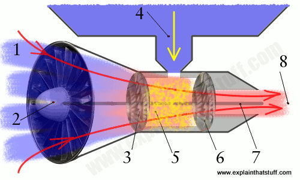
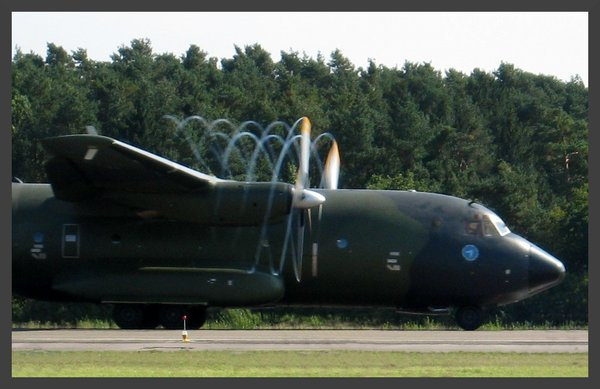

THRUST!
The power behind flight
Jet Propulsion
1. For a jet going slower than the speed of sound, the engine is moving through the air at about 1000 km/h (600 mph). We can think of the engine as being stationary and the cold air moving toward it at this speed.
2. A fan at the front sucks the cold air into the engine.
3. A second fan called a compressor squeezes the air (increases its pressure) by about eight times. This slows the air down by about 60 percent and it's speed is now about 400 km/h (240 mph).
4. Kerosene (liquid fuel) is squirted into the engine from a fuel tank in the plane's wing.
5. In the combustion chamber, just behind the compressor, the kerosene mixes with the compressed air and burns fiercely, giving off hot exhaust gases. The burning mixture reaches a temperature of around 900°C (1650°F).
6. The exhaust gases rush past a set of turbine blades, spinning them like a windmill.
7. The turbine blades are connected to a long axle (represented by the middle gray line) that runs the length of the engine. The compressor and the fan are also connected to this axle. So, as the turbine blades spin, they also turn the compressor and the fan.
8. The hot exhaust gases exit the engine through a tapering exhaust nozzle. The tapering design helps to accelerate the gases to a speed of over 2100 km/h (1300 mph). So the hot air leaving the engine at the back is traveling over twice the speed of the cold air entering it at the front—and that's what powers the plane. Military jets often have an after burner that squirts fuel into the exhaust jet to produce extra thrust. The backward-moving exhaust gases power the jet forward. Because the plane is much bigger and heavier than the exhaust gases it produces, the exhaust gases have to zoom backward much faster than the plane's own speed.
Propellor Propulsion
Propellers, often shortened to "props," are sometimes called screws—and it's easy to see why. To push a screw into the wall, you apply a clockwise turning force to the head with your screwdriver. The spiral groove (sometimes called a helical thread) on the screw's surface converts the turning force into a pushing force that drives the screw into the wall and holds it there. But suppose, for a moment, that you wanted to keep on going...
If you were a beetle and you wanted to move through an infinitely long wooden wall, you could use a screw thread on the outside of your body to do it. You wouldn't need a screw running along the whole length of your body: you could manage with just a little thread on your head—a kind of screw cap—to bite into the wood in front of you. Now suppose you were a fly, not a beetle, and you wanted to go through air rather than wood. There's no reason why you couldn't use a screw thread in exactly the same way to pull you through the sky. In effect, you'd be a fly with a propeller—and that's pretty much what the first airplanes were. Planes took to the sky when the Wright brothers figured out how to combine engine-powered propellers and wings so they could go forward and upward at the same time.
A propeller is a machine that moves you forward through a fluid (a liquid or gas) when you turn it. Though it works the same way as a screw, it looks a bit different: usually it has two, three, or four twisted blades (sometimes more) poking out at angles from a central hub spun around by an engine or motor. The twists and the angles are really important.
